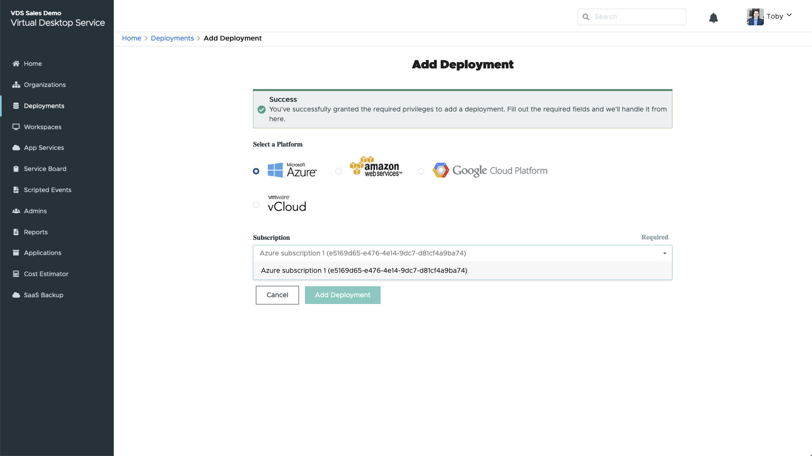
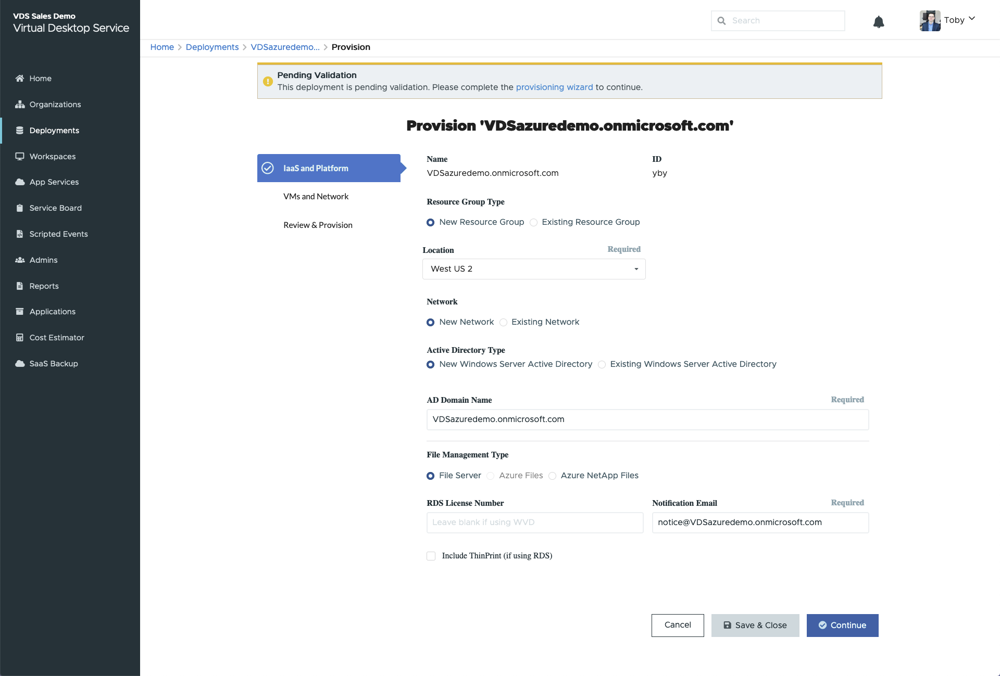
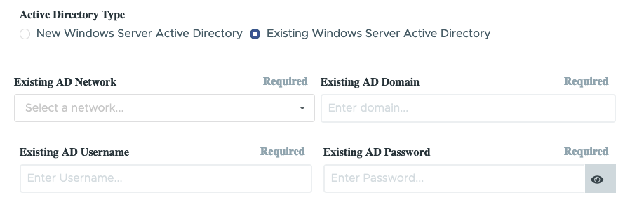
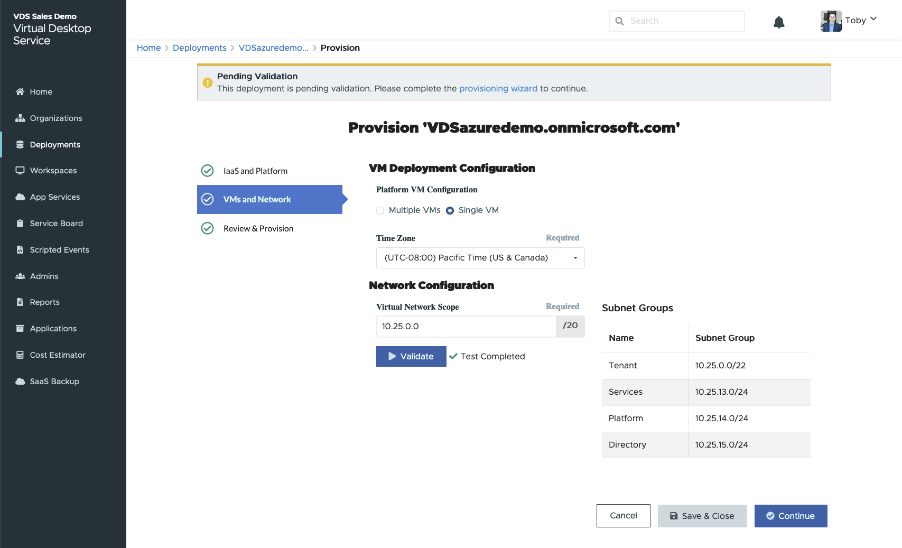
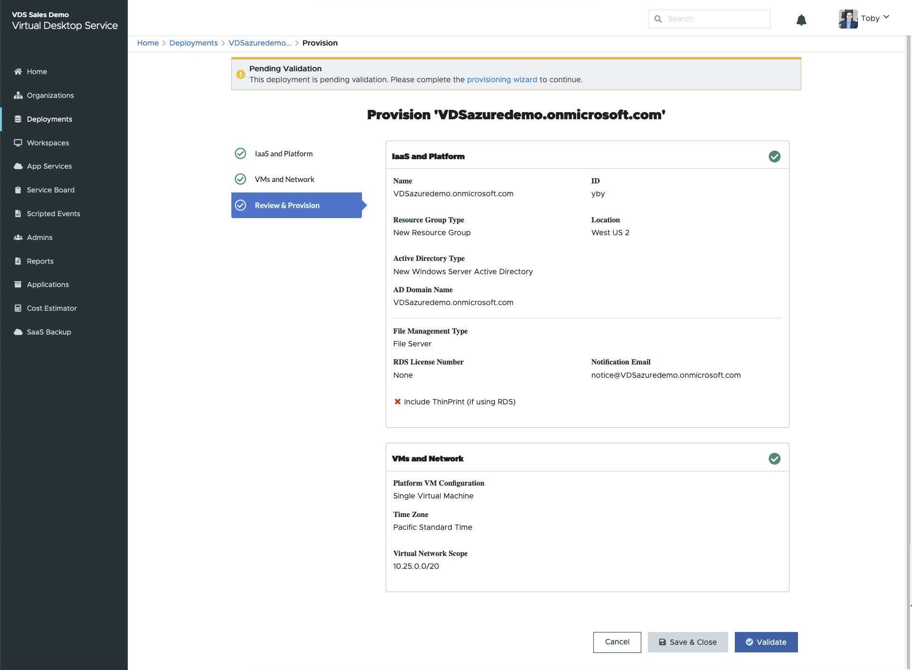
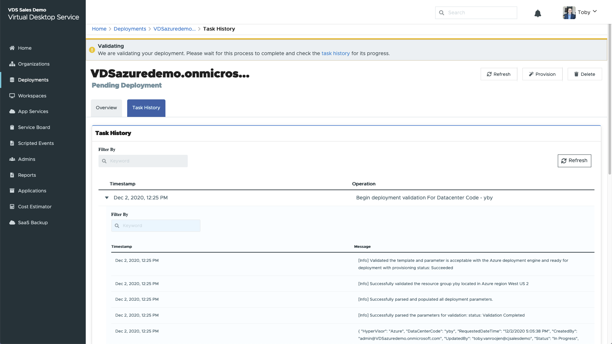

WVD Deployment Guide v6
Contributors
 Download PDF of this page
Download PDF of this page
Overview
This guide will provide the step by step instructions to create a Windows Virtual Desktop (WVD) deployment utilizing NetApp Virtual Desktop Service (VDS) in Azure.
The guide starts at: https://manage.vds.netapp.com/
This Proof of Concept (POC) guide is designed to help you quickly deploy and configure WVD in your own test Azure Subscription. This guide assumes a green-field deployment into a clean, non-production Azure Active Directory tenant.
Production deployments, especially into existing AD or Azure AD environments are very common however that process is not considered in this POC Guide. Complex POCs and production deployments should be initiated with the NetApp VDS Sales/Services teams and not performed in a self-service fashion.
This POC document will take you thru the entire WVD deployment and provide a brief tour of the major areas of post-deployment configuration available in the VDS platform. Once completed you’ll have a fully deployed and functional WVD environment, complete with host pools, app groups and users. Optionally you’ll have the option to configure automated application delivery, security groups, file share permissions, Azure Cloud Backup, intelligent cost optimization. VDS deploys a set of best practice settings via GPO. Instructions on how to optionally disable those controls are also included, in the event your POC needs to have no security controls, similar to an unmanaged local device environment.
WVD basics
Windows Virtual Desktop is a comprehensive desktop and app virtualization service that runs in the cloud. Here is a quick list of some of the key features and functionality:
-
Platform services including gateways, brokering, licensing, and login and included as a service from Microsoft. This minimized infrastructure requiring hosting and management.
-
Azure Active Directory can be leveraged as the identity provider, allowing for the layering of additional Azure security services such as conditional access.
-
Users experience single sign-on experience for Microsoft services.
-
User sessions connect to the session host via a proprietary reverse-connect technology. This means that no inbound ports need to be open, instead an agent creates and outbound connection to the WVD management plane which in turn connects to the end user device.
-
Reverse connect even allows virtual machines to run without being exposed to the public internet enabling isolated workloads even while maintaining remote connectivity.
-
WVD includes access to Windows 10 Multi Session, allowing a Windows 10 Enterprise experience with the efficiency of high density user sessions.
-
FSLogix profile containerization technology is including, enhancing user session performance, storage efficiency and enhancing the Office experience in non-persistent environments.
-
WVD supports full desktop and RemoteApp access. Both persistent or non-persistent, and both dedicated and multi-session experiences.
-
Organizations can save on Windows licensing because WVD can leverage "Windows 10 Enterprise E3 Per User" which replaces the need for RDS CALs and significantly reduces the per-hour cost of session host VMs in Azure.
Guide scope
This guide walks you through the deployment of WVD using NetApp VDS technology from the perspective of an Azure and VDS administrator. You bring the Azure tenant and subscription with zero pre-configuration and this guide helps you setup WVD end-to-end.
-
Confirm prerequisites of the Azure tenant, Azure subscription and Azure admin account permissions
-
Build the Azure environment using the purpose-built VDS for Azure Setup wizard
-
Create the first host pool with a standard Windows 10 EVD image
-
Add users to the default app group for delivering the desktop environment to users. Optionally, create additional host pool(s) for delivering RemoteApp services
-
Connect as an end user via client software and/or web client
-
Connect to the platform and client services as local and domain admin
-
Optionally enable VDS' multi-factor authentication for VDS admins & WVD end users
-
Optionally configure cost optimization technologies including Workload Scheduling and Live Scaling
-
Optionally create, update and Sysprep a virtual machine image for future deployments
Azure prerequisites
VDS uses native Azure security context to deploy the WVD instance. Before starting the VDS Setup wizard, there are a few Azure prerequisites that need to be established.
During the deployment, service accounts and permissions are granted to VDS via authentication of an existing admin account from within the Azure tenant.
Quick prerequisites checklist
-
Azure Tenant with Azure AD instance (can be Microsoft 365 instance)
-
Azure Subscription
-
Available Azure Quota for Azure virtual machines
-
Azure Admin Account with Global Admin and Subscription Ownership Roles
| Detailed prerequisites are documented on this PDF |
Azure administrator in Azure AD
This existing Azure admin must be an Azure AD account in the target tenant. Windows Server AD accounts can be deployed with the VDS Setup but additional steps are required to setup a sync with Azure AD (out of scope for this guide)
This can be confirmed by finding the user account in the Azure Management Portal under Users > All Users.

Global administrator role
The Azure Administrator must be assigned the Global administrator role in the Azure tenant.
-
Log in to the Azure Portal at https://portal.azure.com/
-
Search for and select Azure Active Directory
-
In the next pane to the right, click on the Users option in the Manage section
-
Click on the name of the Administrator user that you are checking
-
Click on Directory Role. In the far-right pane the Global administrator role should be listed

-
From the user Directory Role detail page in step 5 above, click the Add Assignment button at the top of the detail page.
-
Click on Global administrator in the list of roles. Click the Add button.

Azure subscription ownership
The Azure Administrator must also be a Subscription Owner on the subscription that will contain the deployment.
-
Log in to the Azure Portal at https://portal.azure.com/
-
Search for, and select Subscriptions
-
In the next pane to the right, click on the name of the subscription to see the subscription details
-
Click on the Access Control (IAM) menu item in the pane second from the left
-
Click on the Role Assignments tab. The Azure Administrator should be listed in the Owner section.

-
Click the Add button at the top of the page and choose the Add Role Assignment option
-
A dialog will appear to the right. Choose “Owner” in the role drop down, then start typing the username of the Administrator in the Select box. When the full name of the Administrator appears, select it
-
Click the Save button at the bottom of the dialog

Azure compute core quota
The CWA Setup wizard and VDS portal will create new virtual machines and the Azure subscription must have available quota to successfully execute.
-
Navigate to the Subscriptions module and click “Usage + Quotas”
-
Select all providers in the “providers” drop-down, select “Microsoft.Compute in the “Providers” drop-down
-
Select the target Region in the “Locations” drop-down
-
A list of available quotas by virtual machine family should be shown

If you need to increase quota, click Request Increase and follow the prompts to add additional capacity. For the initial deployment specifically request increased quote for the “Standard DSv3 Family vCPUs”
Collect discovery details
Once working through the CWA Setup wizard there are several questions that need to be answered. NetApp VDS has provided a linked PDF that can be used to record these selections prior to deployment. Item include:
| Item | Description |
|---|---|
VDS admin credentials |
Collect the existing VDS admin credentials if you already have them. Otherwise a new admin account will be created during deployment. |
Azure Region |
Determine the target Azure Region based on performance and availability of services. This Microsoft Tool can estimate end user experienced based on region. |
Active Directory type |
The VMs will need to join a domain but can’t directly join Azure AD. The VDS deployment can build a new virtual machine or use an existing domain controller. |
File Management |
Performance is highly dependent on disk speed, particularly as related to user profile storage. The VDS setup wizard can deploy a simple file server or configure Azure NetApp Files (ANF). For nearly any production environment ANF is recommended however for a POC the file server option provides sufficient performance. Storage options can be revised post-deployment, including using existing storage resources in Azure. Consult ANF pricing for details: https://azure.microsoft.com/en-us/pricing/details/netapp/ |
Virtual Network Scope |
A routable /20 network range is required for the deployment. the VDS setup wizard will allow you to define this range. It is important that this range does not overlap with any existing vNets in Azure or on-premises (if the two networks will be connected via a VPN or ExpressRoute). |
VDS setup sections
-
Login to https://manage.vds.netapp.com/ with your VDS credentials.
-
Navigate to Deployments > Add Deployment and select Microsoft Azure and Continue
-
Login with the Azure admin account referenced above in the prerequisites.
-
Select the appropriate Azure subscription and click Add Deployment

IaaS and platform

Azure AD domain name
The Azure AD domain name is inherited by the selected tenant.
Location
Select an appropriate Azure Region. This Microsoft Tool can estimate end user experienced based on region.
Network
Selecting New Network will allow VDS to build a /20 network in Azure based on input provided later in the wizard.
Selecting Existing Network will allow deployment into an existing Azure network and require the Active Directory type (see below) be an Existing Windows Server AD.
Active Directory type
VDS can be provisioned with a new virtual machine for the Domain Controller function or setup to leverage an existing Domain Controller.
Alternatively, VDS can deploy using an existing Active Directory if provided credentials to that domain (e.g. Global Administrator rights)

In this guide we will select New Windows Server Active Directory, which will create one or two VMs (based on choices made during this process) under the subscription.
A detailed article covering an existing AD deployment is found here.
Active Directory domain name
Enter a domain name. Mirroring the Azure AD Domain Name from above is recommended.
| If the domain entered is also used externally, additional steps need to be completed to allow access to that address from within the VDS environment. (e.g. accessing https://www.companydomain.com from within VDS) See this article for more information. |
File Management type
VDS can provision a simple file server virtual machine or setup and configure Azure NetApp Files. In production, Microsoft recommends allocating 30gb per user and we’ve observed that allocating 5-15 IOPS per user is required for optimal performance.
| Azure NetApp Files (ANF) has a 4TiB minimum while managed disks do not have a relevant minimum size. Therefore, the minimum spend on ANF may be cost prohibitive for smaller deployments. As a point of reference, in NetApp’s own Managed Desktop Service (VDMS) we default to ANF for environments with 50+ users. |
In a POC (non-production) environment the file server is a low-cost and simple deployment option. However, the available performance of Azure Managed Disks can be overwhelmed by the IOPS consumption of even a moderately sized production deployment.
For example, a 4TB Standard SSD disk in azure supports up to 500 IOPS, which could only support a maximum of 100 total users at 5 IOPS/user. With ANF Premium the same sized storage setup would support 16,000 IOPS posting 32x more IOPS.
For production WVD deployments, Azure NetApp Files is Microsoft’s recommendation.
| Azure NetApp Files needs to be made available to the subscription you wish to deploy into - please contact your NetApp account rep or use this link: https://aka.ms/azurenetappfiles |
It is also required that you register NetApp as a provider to your subscription. This can be done by doing the following:
-
Navigate to Subscriptions in the Azure portal
-
Click Resource Providers
-
Filter for NetApp
-
Select the provider and click Register
-
RDS license number
NetApp VDS can be used to deploy RDS and/or WVD environments. When deploying WVD, this field can remain empty.
Thinprint
NetApp VDS can be used to deploy RDS and/or WVD environments. Thinprint is an optional install that is only compatible with RDS deployments. When deploying WVD, this toggle can remain off (toggle left).
Notification email
VDS will send deployment notifications and ongoing health reports to the email provided. This can be changed later.
VMs and network
There are a variety of services that need to run in order to support a VDS environment – these are collectively referred to as the “VDS platform”.
Depending on the configuration these can include CWMGR, one or two RDS Gateways, one or two HTML5 Gateways, an FTPS server, and one or two Active Directory VMs.
Most WVD deployments leverage the Single virtual machine option, as Microsoft manages the WVD Gateways as a PaaS service.
For smaller and simpler environments that will include RDS use cases, all of these services can be condensed into the Single virtual machine option to reducing VM costs (with limited scalability). For RDS uses cases with more than 100 users the Multiple virtual machines option is advised in order to facilitate RDS and/or HTML5 Gateway scalability

Platform VM configuration
NetApp VDS can be used to deploy RDS and/or WVD environments. For RDS deployments you need to deploy and manage additional components such as Brokers and Gateways, in production these services should be run on dedicated and redundant virtual machines. For WVD, all of these services are provided by Azure as an included service and thus, the single virtual machine configuration is recommended.
Single VM
This is the recommended selection for deployments that will exclusively use WVD (and not RDS or a combination of the two). In a Single virtual machine deployment the following roles are all hosted on a single VM in Azure:
-
CW Manager
-
HTML5 Gateway
-
RDS Gateway
-
Remote App
-
FTPS Server (Optional)
-
Domain Controller role
The maximum advised user count for RDS use cases in this configuration is 100 users. Load balanced RDS/HTML5 gateways are not an option in this configuration, limiting the redundancy and options for increasing scale in the future. Again, this limit does not apply to WVD deployments, since Microsoft manages the Gateways as a PaaS service.
| If this environment is being designed for multi-tenancy, a Single virtual machine configuration is not supported - neither is WVD or AD Connect. |
Multiple VMs
When splitting the VDS Platform into Multiple virtual machines the following roles are hosted on dedicated VMs in Azure:
-
Remote Desktop Gateway
VDS Setup can be used to deploy and configure one or two RDS Gateways. These gateways relay the RDS user session from the open internet to the session host VMs within the deployment. RDS Gateways handle an important function, protecting RDS from direct attacks from the open internet and to encrypt all RDS traffic in/out of the environment. When two Remote Desktop Gateways are selected, VDS Setup deploys 2 VMs and configures them to load balance incoming RDS user sessions.
-
HTML5 Gateway
VDS Setup can be used to deploy and configure one or two HTML 5 Gateways. These gateways serve up an HTML 5 VDS access client (e.g. https://login.cloudworkspace.com) based on the RemoteSpark technology. Licensing for this component is typically included in the cost of VDS licensing. When two HTM5 CW Portals are selected, VDS Setup deploys 2 VMs and configures them to load balance incoming HTML5 user sessions.
Note that when using Multiple virtual machine option - even if you are only intend to support RDP connections for your RDS workloads - at least 1 HTML5 gateway is highly recommended to enable Connect to Server functionality from VDS. -
Gateway Scalability Notes
For RDS use cases, the maximum size of the environment can be scaled out with additional Gateway VMs, with each RDS or HTML5 Gateway supporting roughly 500 users. Additional Gateways can be added later with minimal NetApp professional services assistance
If this environment is being designed for multi-tenancy then the Multiple virtual machines selection is required.
Time Zone
While the end users' experience will reflect their local time zone, a default time zone needs to be selected. Select the time zone from where the primary administration of the environment will be performed.
Virtual Network Scope
It is a best practice to isolate VMs to different subnets according to their purpose. First, define the network scope and add a /20 range.
VDS Setup detects and suggests a range that should prove successful. Per best practices, the subnet IP addresses must fall into a private IP address range.
These ranges are:
-
192.168.0.0 through 192.168.255.255
-
172.16.0.0 through 172.31.255.255
-
10.0.0.0 through 10.255.255.255
Review and adjust if needed, then click Validate to identify subnets for each of the following:
-
Tenant: this is the range that session host servers and database servers will reside in
-
Services: this is the range that PaaS services like Azure NetApp Files will reside in
-
Platform: this is the range that Platform servers will reside in
-
Directory: this is the range that AD servers will reside in
Review & Provision
The final page provides an opportunity to review your choices. When you have completed that review, click the Validate button. VDS Setup will review all the entries and verify that the deployment can proceed with the information provided. This validation can take 2-10 minutes.
Once validation is complete the green Provision button will appear in place of the Validate button. Click on Provision to start the provisioning process for your deployment.

Task History
The provisioning process takes between 2-4 hours depending on Azure workload and the choices you made. You can follow the progress in the log by clicking the Task History page or wait for the email that will tell you the deployment process has completed. Deployment builds the virtual machines and Azure components required to support both VDS and a Remote Desktop or a WVD implementation. This includes a single virtual machine that can act as both an Remote Desktop session host and a file server. In a WVD implementation this virtual machine will act only as a file server.

Install and configure AD Connect
Immediately after the install is successful, AD Connect needs to be installed and configured on the Domain Controller. In a singe platform VM setup the CWMGR1 machine is the DC. The users in AD need to sync between Azure AD and the local domain.
| AD Connect is a Microsoft supported product that involves managing and replicating user identity and password data. If you plan to use this configuration for production use, make sure you fully understand the configuration choices and security best practices as described by Microsoft. For example, using a task specific privileged service account for the sync credential provides a better security profile than reusing an account that belongs to an Administrator. Full details can be found at https://docs.microsoft.com/en-us/azure/active-directory/hybrid/ |
-
Navigate to the Deplopyment detail page
-
Select Platform Servers from the More… tab
-
Click Connect from the actions column
-
Connect to the domain controller as a domain admin.
-
A domain admin account was automatically created as part of the deployment automation. You can get those credentials from the Azure Key Vault
-
-
Install AD Connect on the DC
-
Download installer and run the .MSI from here
-
Select “Use express settings”. See this Microsoft KB for more details.
-
Use the Azure AD Admin user from the initial deployment to authenticate into Azure AD.
-
Enter the Active Directory admin credentials. ("LocalAdminName" from the Azure Key Vault above)
-
The privileges requirements for the local AD admin can be found at https://docs.microsoft.com/en-us/azure/active-directory/hybrid/reference-connect-accounts-permissions. Enter credentials in the form of domain\account_name (E.g: mytest.onmicrosoft.com\adsyncacct)
-
-
On the Azure AD sign-on page, AD-Connect should be able to match the VDS Domain name to the Azure AD domain name automatically because they are the same. in this scenario, check the “Continue without matching all UPN suffixes” option to proceed since you don’t have any custom domain names to match.
-
Domain suffix matching, including the use of custom domain names at the Azure AD level is supported for this step – consult the AD-Connect documentation for implementing advanced options.
-
On the “Ready to Configure” screen. Click Install
-
-
All users need to be present in both the local domain created in the Workspace and Azure AD. By default, AD Connect will sync new users in the local domain up to the Azure AD Users list. Its ok if you already have users in Azure AD – giving them the same username will allow AD Connect to sync their identity in both domains.
-
Back in VDS, navigate to Workspace Details > User & Groups to manage users.
-
If the user already exists in Azure AD, ensure the username portion matches the Azure AD username and not the entire email address. (E.g. “tanya.jones” and not tanya.jones@mytest.onmicrosoft.com)
Users will be synced up to Azure AD and if the user already exists in Azure AD then the user identities will be synced. Password changes from VDS will sync up to Azure AD users, but Azure AD users will not be able to change their password on Azure AD unless AD-Connect Password Write Back is enabled: (https://docs.microsoft.com/en-us/azure/active-directory/authentication/tutorial-enable-writeback) -
Log into the Azure portal, navigate to Azure Active Directory > AD Connect to confirm that user sync has occurred. Additional details can be found in the application event logs on the domain contrller VM.
-
Create WVD host pool
End User access to WVD virtual machines is managed by host pools , which contain the virtual machines, and app groups, which in-turn contain the users and type of user access.
-
Navidate to Workspace detail page > WVD Tab > Click the Add button in the right hand side of the WVD host pools section header.

-
Enter a name and description for your host pool.
-
Choose a host pool type
-
Pooled means multiple users will access the same pool of virtual machines with the same applications installed.
-
Personal creates a host pool where users are assigned their own session host VM.
-
-
Select the Load Balancer type
-
Depth First will fill the first shared virtual machine to the max number of users before starting on the second virtual machine in the pool
-
Breadth First will distribute users to all the virtual machines in the pool in a round robin fashion
-
-
Select an Azure virtual machines template for creating the virtual machines in this pool. While VDS will show all templates available in the subscription, we recommend selecting the most recent Windows 10 multi-user build for the best experience. The current build is Windows-10-20h1-evd. (Optionally create a Gold Image using the Provisioning Collection functionality to build hosts from a custom virtual machine image)
-
Select the Azure machine size. For evaluation purposes, NetApp recommends the D series (standard machine type for multi-user) or E series (enhanced memory configuration for heavier duty multi-user scenarios). The machine sizes can be changed later in VDS if you want to experiment with different series and sizes
-
Select a compatible storage type for the virtual machines’ Managed Disk instances from the drop down list
-
Select the number of virtual machines you want created as part of the host pool creation process. You can add virtual machines to the pool later, but VDS will build the number of virtual machines you request and add them to the host pool once its created
-
Click the Add host pool button to start the creation process. You can track progress on the WVD page, or you can see the details of the process log on the Deployments/Deployment name page in the Tasks section
-
Once the host pool is created it will appear in the host pool list on the WVD page. Click on the name of the host pool to see its detail page, which includes a list of its virtual machines , app groups, and active users
WVD Hosts in VDS are created with a setting that disallows user sessions to connect. This is by design to allow for customization prior to accepting user connections. This setting can be changed by editing the session host’s settings. 
|
Enable VDS desktops for users
As noted above, VDS creates all the elements required to support end user workspaces during deployment. Once the deployment has completed, the next step is to enable workspace access for each user you want introduced to the WVD environment. This step creates the profile configuration and end user data layer access that is the default for a virtual desktop. VDS reuses this configuration to link Azure AD end users to the WVD App Pools.
-
Log in to VDS at https://manage.cloudworkspace.com using the VDS primary administrator account you created during provisioning. If you don’t remember your account information, please contact NetApp VDS for assistance in retrieving it
-
Click on the Workspaces menu item, then click on the name of the Workspace that was created automatically during provisioning
-
Click on the Users and Groups tab

-
For each user that you want to enable, scroll over the username and then click on the Gear icon
-
Choose the “Enable Cloud Workspace” option

-
It takes about 30-90 seconds for the enablement process to complete. Note that the user status will change from Pending to Available
| Activating Azure AD Domain Services creates a managed domain in Azure, and each WVD virtual machine that is created will be joined to that domain. In order for traditional login to the virtual machines to work, the password hash for Azure AD users must be synced to support NTLM and Kerberos authentication. The easiest way to accomplish this task is to change the user password in Office.com or the Azure portal, which will force the password hash sync to occur. The sync cycle for Domain Service servers can take up to 20 minutes. |
Enable user sessions
By default, session hosts are unable to accept user connections. This setting is commonly called “drain mode” as it can be used in production to prevent new user sessions, allowing the host to eventually remove all user sessions. When new user sessions are allowed on a host this action is commonly referred to as placing the session host “into rotation.”
In production it makes sense to start new hosts in drain mode because there are typically configuration tasks that need to be completed before the host is ready for production workloads.
In testing and evaluation you can immediately take the hosts out of drain mode to enable user connects and to confirm functionality.
.To Enable user sessions on the session host(s) follow these steps:
-
Navigate to the WVD Section of the workspace page.
-
Click on the host pool name under “WVD host pools”.

-
Click on the name of the Session host(s) and check the box “Allow New Sessions”, Click “Update Session Host”. Repeat for all hosts that need to be placed into rotation.

-
The current stats of “Allow New Session” is also displayed on the main WVD page for each host line item.
Default app group
Note that the Desktop Application Group is created by default as part of the host pool creation process. This group provides interactive desktop access to all group members.
.To add members to the group:
-
Click on the name of the App Group

-
Click on the link that shows the number of Users Added

-
Select the users you wish to add to the app group by checking the box next to their name
-
Click the Select Users button
-
Click the Update app group button
Create additional WVD app group(s)
Additional app groups can be added to the host pool. These app groups will publish specific applications from the host pool virtual machines to the App Group users using RemoteApp.
| WVD only allows end users to be assigned to the Desktop App Group type or RemoteApp App Group type but not both in the same host pool, so make sure you segregate your users accordingly. If users need access to a desktop and streaming apps, a 2nd host pool is required to host the app(s). |
-
Click the Add button in the app groups section header

-
Enter a name and description for the App Group
-
Select users to add to the group by clicking on the Add Users link. Select each user by clicking the check box next to their name, then click the Select Users button

-
Click the Add RemoteApps link to add applications to this App Group. WVD automatically generates the list of possible applications by scanning the list of applications installed on the virtual machine . Select the application by clicking on the check box next to the application name, then click the Select RemoteApps button.

-
Click the Add App Group button to create the App Group
End user WVD access
End users can access WVD environments using the Web Client or an installed client on a variety of platforms
-
Web Client: https://docs.microsoft.com/en-us/azure/virtual-desktop/connect-web
-
Web Client Login URL: http://aka.ms/wvdweb
-
Windows Client: https://docs.microsoft.com/en-us/azure/virtual-desktop/connect-windows-7-and-10
-
Android Client: https://docs.microsoft.com/en-us/azure/virtual-desktop/connect-android
-
macOS Client: https://docs.microsoft.com/en-us/azure/virtual-desktop/connect-macos
-
iOS Client: https://docs.microsoft.com/en-us/azure/virtual-desktop/connect-ios
-
IGEL Thin Client: https://www.igel.com/igel-solution-family/windows-virtual-desktop/
Log in using the end user username and password. Note that Remote App and Desktop Connections (RADC), Remote Desktop Connection (mstsc), and the CloudWorksapce Client for Windows application do not currently support the ability to log in to WVD instances.
Monitor user logins
The host pool detail page will also display a list of active users when they log in to a WVD session.
Admin connection options
VDS Admins are able to connect to virtual machines in the environment in a variety of ways.
Connect to server
Throughout the portal, VDS Admins will find the “Connect to Server” option. By default, this function connects the admin to the virtual machine by dynamically generating local admin credentials and injecting them into a web client connection. The Admin does not need to know (and is never provided with) credentials in order to connect.
This default behavior can be disabled on a per-Admin basis as described in the next section.
.tech/Level 3 admin accounts
In the CWA Setup process there is a “Level III” admin account created. The user name is formatted as username.tech@domain.xyz
These accounts, commonly called a “.tech” account, are named domain-level administrator accounts. VDS Admins can use their .tech account when connecting to a CWMGR1 (platform) server and optionally when connecting to all other virtual machines in the environment.
To disable the automatic local admin login function and force the Level III account to be used, change this setting. Navigate to VDS > Admins > Admin Name > Check “Tech Account Enabled.” With this box checked, the VDS admin will not be automatically logged into virtual machines as a local admin and rather be prompted to enter their .tech credentials.
These credentials, and other relevant credentials, are automatically stored in the Azure Key Vault and can be accessed from within the Azure Management Portal at https://portal.azure.com/.
Optional post-deployment actions
Multi-factor authentication (MFA)
NetApp VDS includes SMS/Email MFA at no charge. This feature can be used to secure VDS Admin accounts and/or End User accounts.
MFA Article
Application entitlement workflow
VDS provides a mechanism to assign end users access to applications from a pre-defined list of applications called the Application Catalog. The Application catalog spans all managed deployments.
| The automatically deployed TSD1 server must remain as-is to support application entitlement. Specifically, do not run the “convert to data” function against this virtual machine. |
Application Management is detailed in this Article: Management.Applications.application_entitlement_workflow.html
Azure AD security groups
VDS includes functionality to create, populate and delete user groups which are backed by Azure AD Security Groups. These groups can be used outside of VDS just like any other Security Group. In VDS these groups can be used to assign folder permissions and application entitlement.
Create user groups
Creating user groups is performed on the Users & Groups tab within a workspace.
Assign folder permissions by group
Permissions to view and edit folders in the company share can be assigned to users or groups.
Assign applications by group
In addition to assigning applications to users individually, applications can be provisioned to groups.
-
Navigate to the Users and Groups Detail.

-
Add a new group or edit an existing group.

-
Assign user(s) and application(s) to the group.

Configure cost optimization options
Workspace management also extends to managing the Azure resources that support the WVD implementation. VDS allows you to configure both Workload Schedules and Live Scaling to turn Azure virtual machines on and off based on end user activities. These features result in matching Azure resource utilization and spending to the actual usage pattern of end users. In addition, if you have configured a proof of concept WVD implementation you can turn the whole Deployment from the VDS interface.
Workload scheduling
Workload Scheduling is a feature that allows the Administrator to create a set schedule for the Workspace virtual machines to be on to support end user sessions. When the end of the scheduled time period is reached for a specific day of the week, VDS Stops/Deallocates the virtual machines in Azure so that hourly charges stop.
-
Log in to VDS at https://manage.cloudworkspace.com using your VDS credentials.
-
Click on the Workspace menu item and then click on the name of the Workspace in the list.

-
Click on the Workload Schedule tab.

-
Click the Manage link in the Workload Schedule header.

-
Choose a default state from the Status drop down: Always On (default), Always Off, or Scheduled.
-
If you choose Scheduled, the Scheduling options include:
-
Run at Assigned Interval every day. This option sets the schedule to be the same Start Time and End Time for all seven days of the week.

-
Run at Assigned Interval for Specified Days. This option sets the schedule to the same Start Tie and End Time only for selected days of the week. Non-selected days of the week will cause VDS to not turn the virtual machines on for those days.

-
Run at variable time intervals and days. This option sets the schedule to different Start Times and End Times for each selected day.

-
Click the Update schedule button when finished setting the schedule.

-
Live Scaling
Live Scaling automatically turns virtual machines in a shared host pool on and off depending on concurrent user load. As each server fills up, an additional server is turned on so that its ready when the host pool load balancer sends user session requests. For effective use of Live Scaling, choose “Depth First” as the load balancer type.
-
Log in to VDS at https://manage.cloudworkspace.com using your VDS credentials.
-
Click on the Workspace menu item and then click on the name of the Workspace in the list.

-
Click on the Workload Schedule tab.

-
Click the Enabled radio button in the Live Scaling section.

-
Click the Max Number of Users Per Server and enter the max number. Depending on virtual machine size, this number is typically between 4 and 20.

-
OPTIONAL – Click the Extra Powered On Servers Enabled and enter a number of additional servers that you want on for the host pool. This setting activates the specified number of servers in addition to the actively filling server to act as a buffer for large groups of users logging on in the same time window.

| Live Scaling currently applies to all Shared resource pools. In the near future each pool will have independent Live Scaling options. |
Power down the entire deployment
If you plan to only use your evaluation deployment on a sporadic, non-production basis you can turn off all the virtual machines in the deployment when you are not using them.
-
Log in to VDS at https://manage.cloudworkspace.com using your VDS credentials.
-
Click on the Deployments menu item.

Scroll your cursor over the line for the target Deployment to display the Configuration gear icon.
-
Click on the gear, then choose Stop.

-
To restart or Start, follow steps 1-3 and then choose Start.

| It may take several minutes for all the virtual machines in the deployment to stop or start. |
Create and manage VM images
VDS contains functionality for creating and managing virtual machine images for future deployments. To reach this functionality, navigate to: VDS > Deployments > Deployment Name > Provisioning Collections. The “VDI Image Collection” features are documented here: https://flightschool.cloudjumper.com/cwms/provisioning-collections/
Configure Azure cloud backup service
VDS can natively configure and manage Azure Cloud Backup, an Azure PaaS service for backing up virtual machines. Backup Policies can be assigned to individual machines or groups of machine by type or host pool. Details are found here: Management.System_Administration.configure_backup.html
Select app management/policy mode
By default, VDS implements a number of Group Policy Objects (GPO) that lock down the end user workspace. These policies prevent access to both core data layer locations (ex: c:\) and the ability to perform application installations as an end user.
This evaluation is intended to demonstrate the capabilities of Window Virtual Desktop, so you have the option to remove the GPOs so that you can implement a “basic workspace” that provides the same functionality and access as a physical workspace. To do this, follow the steps in the “Basic Workspace” option.
You can also choose to utilize the full Virtual Desktop management feature set to implement a “Controlled Workspace”. These steps include creating and managing an application catalog for end user application entitlement and using Administrator level permissions to manage access to both applications and data folders. Follow the steps in the “Controlled Workspace” section to implement this type of workspace on your WVD host pools.
Controlled WVD workspace (default policies)
Using a controlled workspace is the default mode for VDS deployments. The polices are applied automatically. This mode requires VDS Administrators to install applications and then end users are granted access to the application via a shortcut on the session desktop. In a similar fashion, access to the data folders are assigned to end users by creating mapped shared folders and setting up permissions to see only those mapped drive letters instead of the standard boot and/or data drives. To manage this environment, follow the steps below to install applications and provide end user access.
Reverting to basic WVD workspace
Creating a basic workspace requires disabling the default GPO policies that are created by default.
-
Log in to VDS at https://manage.cloudworkspace.com using your primary admin credentials.
-
Click on the Deployments menu item on the left.

-
Click on the name of your Deployment.

-
Under the Platform Servers section (mid page on right), scroll to the right of the line for CWMGR1 until the gear appears.

-
Click on the gear and choose Connect.

-
Enter the “Tech” credentials you created during provisioning to log on to the CWMGR1 server using HTML5 access.

-
Click the Start (Windows) menu, choose Windows Administrative Tools.

-
Click the Group Policy Management icon.

-
Click on the AADDC Users item in the list in the left pane.

-
Right click on the “Cloud Workspace Users” policy in the list on the right pane, then deselect the “Link Enabled” option. Click OK to confirm this action.


-
Select Action, Group Policy Update from the menu, then confirm that you want to force a policy update on those computers.

-
Repeat steps 9 and 10 but select “AADDC Users” and “Cloud Workspace Companies” as the policy to disable the Link. You do not need to force a Group Policy update after this step.


-
Close the Group Policy Management editor and Administrative Tools windows, then Log Off.

These steps will provide a basic workspace environment for end users. To confirm, log in as one of your end user accounts – the session environment should not have any of the Controlled Workspace restrictions like hidden Start menu, locked down access to the C:\ drive, and hidden Control Panel.
| The .tech account that was created during deployment has full access to install applications and change security on folders independent of VDS. However, if you want end users from the Azure AD domain to have similar full access, you should add them to the Local Administrators group on each virtual machine. |
 Edit on GitHub
Edit on GitHub